대기환경기사 (2004-05-23 기출문제)
1과목: 대기오염 개론
1. 대기오염원 영향평가방법인 분산모델의 특징으로 틀린것은?
- 2차오염원의 확인이 가능하다.
- 오염물의 장기간 분석시 문제가 된다.
- 새로운 오염원이 지역내에 생길 때 매번 재평가를 하여야 한다.
- 점, 선, 면 오염원의 영향을 평가할 수 있다.
(정답률: 알수없음)

2. 산성강우에 대한 다음 설명중 ( )안에 적당한 말은?
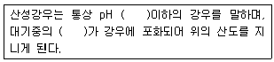
- 7, CO2
- 7, NO2
- 5.6, CO2
- 5.6, NO2
(정답률: 알수없음)
3. 대기오염에서의 ppm은 부피당 부피(V/V)와 무게당 무게(W/W)가 이용된다. 이산화질소 1.O V/V ppm에 상당하는 W/W ppm은? (단, 0℃, 1기압을 기준으로 한다.)
- 0.91
- 1.08
- 1.26
- 1.58
(정답률: 알수없음)
4. 내경이 4m인 굴뚝에서 연기가 10m/s의 속도로 풍속이 5m/s인 대기로 방출된다. 대기는 27℃의 온도를 가지며 중립상태이다. 연기의 온도가 167℃일때 TVA모델에 의한 연기의 상승고는 얼마인가?
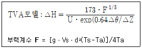
- 약 124m
- 약 145m
- 약 165m
- 약 197m
(정답률: 20%)
5. 지상 10m에서의 풍속이 2.5m/sec라면 50m에서의 풍속은? (단,Deacon의 power law인용, 대기안정도에 따른 P=0.5 )
- 4.1m/sec
- 5.6m/sec
- 6.2m/sec
- 7.8m/sec
(정답률: 알수없음)
6. 코리올리 힘에 관한 설명으로 틀린 것은?
- 코리올리 힘은 지구의 양극지방에서 최대가 된다.
- 코리올리 힘은 기압차에 따라 풍속에 영향을 미친다
- 코리올리 힘은 북반구에서는 물체의 운동방향의 오른쪽 방향으로 작용한다
- 코리올리 힘은 지구의 자전운동에 의해서 생기는 수평방향으로의 가상적인 힘이다.
(정답률: 47%)
7. 입자상 물질을 가장 알맞게 설명한 것은?
- 훈연(fume)은 입경이 1㎛ 이상이며 브라운운동으로 상호 응집이 쉽지 않다.
- 액적(mist)은 시정거리가 1㎞ 이하로 안개보다 불투명하다.
- 안개(fog)는 습도가 70% 이상으로 증기의 응축 또는 화학반응에 의해 생성되는 액체입자이다.
- 연무(박무)(haze)는 습도가 70% 이하로 시야를 방해하는 물질이며 크기는 1㎛보다 작다.
(정답률: 43%)
8. 유효굴뚝높이가 100m 이고, SO2의 배출량이 10g/s인 화력 발전소가 있다. 굴뚝배출구에서 대기풍속이 5m/s일 때에 최대착지농도는? (단, 계산시 아래의 가우시안 연기모델을 이용함
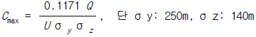
)- 6.01 ㎍/m3
- 6.69 ㎍/m3
- 8.01 ㎍/m3
- 8.69 ㎍/m3
(정답률: 알수없음)
9. 대기오염물질과 관련되는 배출업소를 가장 알맞게 짝지은 것은?
- 벤젠 - 도장공업
- 염소 - 시멘트 제조
- 시안화수소 - 유리공업
- 이황화탄소 - 구리정련
(정답률: 알수없음)
10. 가우시안모델에 대한 설명중 바르지 않은 것은?
- 주로 평탄지역에 적용이 가능하다.
- 장기적인 대기오염도 예측에 사용이 용이하다.
- 점오염원에서는 풍하방향으로 확산되어가는 plume이 정규 분포한다고 가정하여 유도한다.
- 수평방향의 난류확산은 대류에 의한 확산보다 크다고 가정하여 유도한다.
(정답률: 알수없음)
11. 대기의 오존층에 관한 설명으로 틀린 것은?
- 오존층이란 성층권에서도 오존이 더욱 밀집해 분포하고 있는 지상 50-60km 구간을 말한다.
- 오존층의 두께를 표시하는 단위는 돕슨(Dobson)이며 지구대기 중의 오존총량을 표준상태에서 두께로 환산 했을 때 1mm 를 100돕슨으로 정하고 있다.
- 적도지방의 오존층 두께는 약 400돕슨 정도이며 극지방은 약 200돕슨 정도이다.
- 성층권에서는 산소분자가 자외선에 의해 광분해되는 과정을 통해 오존의 생성과 소멸과정이 되풀이 된다.
(정답률: 알수없음)
12. 건조 단열 기온체감률에서 100m 상승할 때마다의 기온 변화는?
- -0.6 ℃
- -1.0 ℃
- -1.2 ℃
- -1.5 ℃
(정답률: 알수없음)
13. 지구온난화의 원인인 온실효과에 대한 기여도가 가장 낮은 가스는?
- SO2
- CO2
- CFCs
- N2O
(정답률: 알수없음)
14. 다음은 광화학반응에 관한 설명이다. ( )안에 알맞는 내용은?
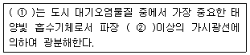
- ① NO2 ② 420nm
- ① NO2 ② 360nm
- ① O3 ② 420nm
- ① O3 ② 360nm
(정답률: 알수없음)
15. 실내오염물질인 '라돈'에 관한 설명으로 틀린 것은?
- 공기보다 1.5배 무겁기 때문에 지표 가까이에 많이 존재한다.
- 노출되면 주로 호흡기 계통의 질환과 폐암이 발생할 수 있다.
- 반감기는 3.8일로 라듐이 핵분열할 때 생성되는 물질로 무색,무취하다.
- 자연 방사성 물질 중의 하나로서 사람이 흡입하기 쉬운 기체상 물질이다.
(정답률: 알수없음)
16. 대도시의 아황산가스(SO2)의 평균농도가 0℃, 1기압에서 0.1ppm이다. 이 농도를 ㎍/m3의 단위로 환산하면?
- 168 ㎍/m3
- 286 ㎍/m3
- 324 ㎍/m3
- 348 ㎍/m3
(정답률: 알수없음)
17. 대기오염사건별 연관된 내용만을 바르게 연결된 것은?
- Meuse Valley사건 - 무풍상태 - 황산공장등에서 SO2등이 배출
- Tokyo Yokohama사건 - 대기불안정- 미군가족피해 - 피부질환
- Donora사건 - 기온역전 - 황산공장에서 황화수소 대량 유출
- Poza Rica사건 - 대기불안정 - 대도시지대 - 화산
(정답률: 알수없음)
18. 굴뚝으로부터 배출되어지는 연기의 확산모양과 대기의 안정도에 대한 설명 중 틀린 것은?
- 환상형(looping)은 대기가 불안정하여 난류가 심할 때 발생하고, 지표면에서 일시적인 고농도 현상이 발생할 수 있다.
- 하층은 대류가 활발하여 불안정해지나 상층은 아직 안정상태일 경우 훈증형이 나타나고 지표면에서의 오염도는 높다.
- 연기가 배출되는 상당한 높이까지 강안정상태가 유지되는 기온역전일 경우 부채형(fanning)이 되고, 굴뚝 부근의 지표에서는 농도가 낮다.
- 바람이 다소 강하거나 구름이 많이 낀 경우 대기상태는 중립을 유지하고, 이 때에는 구속형(trapping)으로 나타나고 지표면 농도는 높다.
(정답률: 알수없음)
19. 실제굴뚝높이가 50m, 굴뚝내경 5m, 배출속도 12m/s, 굴뚝 주위의 풍속이 4m/s 이라면 유효굴뚝높이는? (단, Δ H = (1.5Vs× D)/U 를 이용하라.)
- 52.5 m
- 62.5 m
- 72.5 m
- 82.5 m
(정답률: 60%)
20. 리차드슨(Richardson)수와 대기혼합간의 관계를 올바르게 설명한 것은?
- 0.25 ＞ Ri : 수직방향의 혼합이 없음
- 0 ＞ Ri ＞ 0.25 : 성층에 의해서 약화된 기계적 난류 존재
- Ri = 0 : 기계적 난류만 존재
- Ri ＞ -0.04 : 대류에 의한 혼합이 기계적 혼합을 지배
(정답률: 알수없음)
2과목: 연소공학
21. 연소가스분석결과 CO2=13%, O2=6.5% 일 때 과잉공기계수(m)은?
- 1.55
- 1.45
- 1.35
- 1.25
(정답률: 알수없음)
22. 메탄(CH4) 2.0Sm3을 연소한다. 이 때 발생되는 이론습연 소가스량(Sm3)은?
- 약 21.5
- 약 18.5
- 약 14.5
- 약 10.5
(정답률: 9%)
23. 화염을 유지하기 위한 보염기에 대한 설명과 가장 거리가 먼 것은?
- 원추형 보염기는 원추의 가장자리에서 말려들게 한 소용돌이에 의하여 주로 보염작용을 행한다.
- 축류형 보염기는 축의 전방에 생기는 소용돌이에 의하여 주로 보염작용을 행한다.
- 공기유동에 대해 소용돌이를 발생시켜 화염의 순환 영역을 만들어 화염의 안정화를 꾀한다.
- 공기유동에 대해 연료를 역방향으로 분사하여 국부 공기유속을 화염전파속도보다 작게 한다.
(정답률: 알수없음)
24. 가스 발생로에서 나온 발생로 가스 1Nm3 을 완전연소 하는데 필요한 공기량(Nm3)은? (단, 가스는 수분을 포함하지 않으며 가스의 성분은 다음과 같다 CO2 =3.0%, CO=25.2%, CH4=4%, N2 =55.3%, H2 =12.5%)
- 1.278
- 2.278
- 3.278
- 4.278
(정답률: 알수없음)
25. 고압공기식 유류버너(고압기류식버너)에 관한 설명 중 틀린 것은?
- 증기압 또는 공기압은 2 ∼ 10 ㎏/㎝2 정도이다.
- 기름의 분무각도는 45° ∼90° 정도이다.
- 유량의 조절비(turn down ratio)는 1:10 정도이다.
- 무화용 공기량은 이론공기량의 7 ∼ 12%이다.
(정답률: 알수없음)
26. 1 centi-poise(cp)를 kg/mㆍsec로 환산한 값은?
- 0.0001
- 0.001
- 0.01
- 0.1
(정답률: 알수없음)
27. 석탄의 탄화도가 증가하면 감소하는 것은?
- 고정탄소
- 매연발생율
- 착화온도
- 발열량
(정답률: 알수없음)
28. 굴뚝내의 배기가스의 평균온도는 127℃, 외부대기의 온도는 27℃이다. 이 때 통풍력을 30mmH2O로 하려면 굴뚝의 높이는 얼마로 해야 하나? (단, 연소가스와 공기의 표준상태에서의 비중량은 1.3kg/Sm3이고, 굴뚝내의 압력손실은 무시한다.)
- 약 67 m
- 약 84 m
- 약 93 m
- 약 101 m
(정답률: 알수없음)
29. 어떤 석탄을 공업분석한 결과 휘발분이 34wt%, 수분이 4wt%, 그리고 고정탄소가 62wt%이었다. 석탄의 연료비는?
- 0.55
- 0.61
- 1.63
- 1.82
(정답률: 알수없음)
30. 다음 중 기체연료의 연소형태로 적당한 것은?
- 증발연소
- 분해연소
- 표면연소
- 확산연소
(정답률: 알수없음)
31. 질소산화물(NOx)생성 특성에 관한 설명으로 알맞지 않은 것은?
- 연료중 질소함량이 낮을수록 Fuel NO 변환율이 증가하는 경향이 있다.
- 화염온도가 높을수록 질소 산화물의 생성은 커진다.
- 배출 가스 중 산소분압이 높을수록 질소 산화물의 생성이 커진다.
- 화염속에서 생성되는 질소산화물은 주로 NO2이며 소량의 NO를 함유한다.
(정답률: 40%)
32. 다음 연료중 착화온도가 가장 낮은 것은?
- 중유
- 역청탄
- 탄소
- 무연탄
(정답률: 알수없음)
33. 프로판 3m3를 완전연소시킬 때 이론건조 연소가스량(Sm3)은?
- 60.4
- 62.4
- 65.4
- 69.4
(정답률: 알수없음)
34. 굴뚝 배기가스중 HCl농도가 200ppm이었다 이 가스를 세정기를 이용하여 32mg/Nm3 이하로 유지하려면 세정기의 HCl 제거효율은 몇 %로 설계해야 하는가?
- 약 75% 이상
- 약 80% 이상
- 약 85% 이상
- 약 90% 이상
(정답률: 알수없음)
35. 수소 12%, 수분 0.3%이 포함된 고체연료의 고위 발열량이 10,000Kcal/kg일 때 이 연료의 저위 발열량은?
- 9,220 Kcal/kg
- 9,350 Kcal/kg
- 9,680 Kcal/kg
- 9,740 Kcal/kg
(정답률: 62%)
36. 폐타이어를 연료화하는 주된 방식과 가장 거리가 먼 것은?
- 감압분해 증류 방식
- 액화법에 의한 연료추출 방식
- 열분해에 의한 오일추출 방식
- 직접 연소 방식
(정답률: 알수없음)
37. 2%(무게기준)의 유황을 포함한 석탄 1톤을 표준대기 상태에서 완전연소시키면 SO2가 몇 m3 발생되는가? (단, 황 전량은 SO2 로 전환됨)
- 42
- 34
- 28
- 14
(정답률: 36%)
38. 가연성 가스의 폭발범위에 관한 설명으로 틀린 것은?
- 가스의 온도가 높아지면 일반적으로 넓어진다
- 가스압이 높아지면 하한값이 크게 변화되지 않으나 상한값은 높아진다
- 폭발한계 농도 이하에서는 폭발성 혼합가스를 생성하기 어렵다
- 압력이 상압(1기압)보다 낮아질 때 변화가 크다
(정답률: 알수없음)
39. 가로, 세로, 높이가 각각 3.5m인 연소실에서 저발열량이 15,000 kcal/kg의 중유를 1시간에 50kg을 연소시킬 때 열발생율(kcal/m3ㆍday)은? (단, 연속가동 기준)
- 4.2 x 105
- 4.3 x 105
- 4.4 x 105
- 4.5 x 105
(정답률: 55%)
40. 어떤 석탄의 원소구성비가 무게비로 C:70%, H:10%, O:15% S:5% 로 나타났다. 이 석탄 1kg을 완전연소시킬 때 필요한 이론산소량은 몇 kg 인가?
- 1.47
- 2.57
- 3.91
- 4.68
(정답률: 알수없음)
3과목: 대기오염 방지기술
41. 흡착과정에 대한 설명으로 틀린 것은?
- 실제의 흡착은 비정상상태에서 진행되므로 흡착의 초기에는 흡착이 천천히 진행되다가 어느 정도 흡착이 진행되면 빠르게 흡착이 이루어진다.
- 흡착제층 전체가 포화되어 배출가스 중에 오염가스의 일부가 남게 되는 점을 파괴점이라 하고 이점 이후 부터는 오염가스의 농도가 급격히 증가한다.
- 주어진 온도와 압력조건에서는 파괴점에서 흡착제가 가장 많은 양의 흡착질을 흡착하게 된다.
- 흡착질의 처리량을 시간의 함수로 나타내면 S자형 곡선이 되는데 이것을 돌파곡선이라 한다.
(정답률: 알수없음)
42. 흡착시설이 갖추어야할 조건 중 부적당한 것은?
- 기체흐름에 대한 저항이 커야 한다.
- 흡착제의 사용 기간이 길수록 좋다.
- 가스와 흡착제의 접촉시간이 긴 것이 요구된다.
- 흡착제의 재생 능력이 클수록 좋다.
(정답률: 알수없음)
43. 직경 10㎛인 입자의 침강속도가 0.5㎝/sec였다. 같은 조성을 지닌 20㎛입자의 침강속도는? (단, 스토크 침강속도식 적용)
- 0.5 ㎝/sec
- 1 ㎝/sec
- 2 ㎝/sec
- 4 ㎝/sec
(정답률: 알수없음)
44. 굴뚝배출가스 중 불화수소농도는 250ppm이었다. 이 때 배출가스량 1000Sm3/hr인 가스를 10m3 의 물로 10시간 세정할 경우 순환수의 pH는? (단, F원자량: 19, 불화수소는 60% 전리한다고 가정)
- 2.17
- 2.48
- 2.56
- 2.78
(정답률: 알수없음)
45. 높이 1.5m, 길이 7m인 중력집진장치에서 밀도가 2000kg/m3인 입자를 포함하는 배출가스가 2m/s의 속도로 유입되고 있다. 배출가스의 흐름이 층류일 때 100% 집진되는 최소입자의 직경(㎛)은? (단, 가스의 밀도와 점도는 각각 1.2kg/m3, 1.85× 10-5kg/mㆍs이다.)
- 92
- 104
- 112
- 121
(정답률: 알수없음)
46. 배출가스량 1000m3/hr, 가스 온도 100℃, 압력이 600mmHg 함진농도 5g/m3를 처리하는 집진장치의 출구 함진농도가 0.04g/Sm3 이라면 집진장치의 처리효율(%)은?
- 95.8
- 96.8
- 98.6
- 99.5
(정답률: 알수없음)
47. 전기집진장치 운전시 발생될 수 있는 역전리현상의 원인과 가장 거리가 먼 것은?
- 입구의 유속이 클 때
- 미분탄 연소시
- 배기가스의 점성이 클 때
- 분진 비저항이 너무 클 때
(정답률: 알수없음)
48. 어떤 배기가스가 직경 40cm의 원형 덕트(duct)에서 유량 2m3/sec로 흐를 때 덕트 10m당 생기는 압력손실(mmH2O)는? (단, 배기가스의 비중량은 1.25kgf/m3, 철판 송풍관의 마찰계수는 0.012를 직접 적용한다.)
- 4.8
- 5.8
- 6.8
- 7.8
(정답률: 알수없음)
49. 충진탑내 상부에서 흐르는 액체는 충진물 전체를 적시면서 고르게 분포하는 것이 가장 좋다. 균일한 액의 분포를 위하여 (D/d)비는 얼마로 하는 것이 가장 이상적(편류현상 최소)인가? (단, 흡수탑의 탑지름 : D, 충전물의 지름 : d )
- 8∼10 정도
- 11∼15 정도
- 16∼20 정도
- 20 이상
(정답률: 알수없음)
50. 황 함유량이 2%인 중유를 10t/hr로 연소하는 보일러에서 배기가스를 NaOH수용액으로 처리한 후, 황성분을 Na2SO3로 회수할 경우 필요한 NaOH의 이론량은?
- 400㎏/hr
- 500㎏/hr
- 800㎏/hr
- 1,000㎏/hr
(정답률: 알수없음)
51. 가스흡수장치는 조작방법에 따라 액분산형과 가스분산형으로 나눌 수 있다. 그 조작이 가스 분산형인 것은?
- 충전탑
- 분무탑
- 사이클론 스크러버
- 다공판법
(정답률: 알수없음)
52. 어떤 집진장치의 압력손실이 300mmH2O 이고 처리가스량은 45000m3/hr 일 때 소요되는 송풍기의 소요동력은 몇 kW인가? (단,송풍기의 효율은 65%, 송풍기는 30%의 여유를 준다.)
- 73.53
- 121.82
- 147.06
- 151.99
(정답률: 알수없음)
53. 염소가스의 농도가 0.6%(부피비)되는 배출가스 500Nm3/hr를 수산화칼슘으로 처리하려고 할 때 이론적으로 필요한 시간당 수산화 칼슘량은? (단, 칼슘 원자량: 40 )
- 4.64 ㎏
- 5.82 ㎏
- 7.89 ㎏
- 9.91 ㎏
(정답률: 20%)
54. SO2 와 물이 30℃에서 평형상태에 있다. 기상에서의 SO2 분압이 1090mmH2O일 때 액상에서의 SO2농도는? (단, 30℃에서 SO2 헨리상수는 16(atmㆍm3/kmol) )
- 3.6× 10-3(kmol/m3)
- 4.6× 10-3(kmol/m3)
- 5.6× 10-3(kmol/m3)
- 6.6× 10-3(kmol/m3)
(정답률: 알수없음)
55. 아래의 구형입자크기 분포에 대하여 기하평균 직경(geometric mean diameter)은?
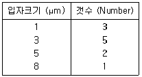
- 1.67㎛
- 2.67㎛
- 3.67㎛
- 4.67㎛
(정답률: 알수없음)
56. 헨리법칙을 이용하여 유도된 총괄물질이동계수와 개별물질 이동계수의 관계를 옳게 나타낸 것은?(단, KG:기상총괄물질이동계수, kℓ :액상물질이동계수 kg:기상물질이동계수 )
 (m : 헨리정수)
(m : 헨리정수) (m : 헨리정수)
(m : 헨리정수) (m : 헨리정수)
(m : 헨리정수) (m : 헨리정수)
(m : 헨리정수)
(정답률: 알수없음)
57. 분진입도의 분포(누적분포)를 나타내는 식은?
- Rayleigh 분포식
- Freundlich 분포식
- Rosin-Rammler 분포식
- Cunningham 분포식
(정답률: 알수없음)
58. 휘발유 자동차의 배출가스를 감소하기 위해 적용되는 삼원촉매 장치의 촉매물질 중 환원촉매로 사용되고 있는 물질은?
- 백금
- 니켈
- 로듐
- 파라듐
(정답률: 알수없음)
59. 기상총괄이동단위 높이 HOG가 1.6m인 충전탑을 사용하여 배기가스 중의 HF를 NaOH수용액에 흡수 제거하려 한다. 제거율(흡수효율)이 97%가 되기 위한 이론적 충전높이는?
- 2.7m
- 3.8m
- 4.2m
- 5.6m
(정답률: 알수없음)
60. 어떤 전기집진장치의 집진면적비(A/Q)가 20m2/(1000m3/h)일 때 집진효율이 90%이었다. 이 전기집진장치의 집진 면적비를 30m2/(1000m3/h)으로 할 때 집진효율(%)은? (단, Deutsch-Anderson식 기준, 기타조건 변화 없음)
- 92
- 94
- 97
- 99
(정답률: 알수없음)
4과목: 대기오염 공정시험기준(방법)
61. 다음중 원자 흡광광도법의 원리를 가장 올바르게 설명한 것은?
- 시료를 해리시켜 중성원자로 증기화하여 생긴 기저 상태의 원자가 이 원자증기층을 투과하는 특유파장의 빛을 흡수하는 현상을 이용
- 시료를 해리시켜 발생된 기저상태의 원자가 여기상태로 되면서 내는 빛의 흡광도를 측정
- 시료를 해리시켜 발생된 여기상태의 원자가 원자증기 층을 통과하는 특유파장의 빛을 흡수하는 현상을 이용
- 시료를 해리시켜 발생된 여기상태의 원자가 기저상태로 돌아올 때 내는 흡광도를 측정
(정답률: 알수없음)
62. 다음은 굴뚝등에서 배출되는 배출가스 중의 암모니아를 측정하기 위한 중화적정법에 대한 설명이다. 가장 옳게 설명된 것은?
- 시료가스를 붕산용액에 흡수 시킨후 지시약을 넣고 N/10 황산으로 적정하는 방법이다.
- 시료가스를 산성조건에서 지시약을 넣고 N/10 NaOH로 적정하는 방법이다.
- 시료가스 채취량이 40ℓ 일 때 암모니아농도 100ppm 이하인 경우에 적용한다.
- 지시약은 페놀프탈레인용액과 메틸레드용액을 1:2 부피비로 섞어 사용한다.
(정답률: 알수없음)
63. 어느 지역에 환경기준 시험을 위한 시료채취 측정점수(채취지점수)를 인구비례에 의한 방법으로 구하면 얼마인가?
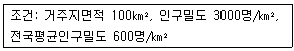
- 10개
- 20개
- 25개
- 30개
(정답률: 알수없음)
64. 화학분석의 일반사항 내용중 틀린 것은?
- 액의 농도를 (1→ 2)로 표시된 것은 용질 1g 또는 1mL를 용매에 녹여 전량을 2mL로 하는 비율이다.
- 황산 (1:2)라 표시한 것은 황산 1용량에 물 2용량을 혼합한 것이다.
- 표준품은 원칙적으로 1급이상의 시약을 사용한다.
- 방울수라함은 20℃에서 정제수 20방울을 떨어뜨릴 때 부피 약 1mL가 되는 것을 뜻한다.
(정답률: 알수없음)
65. 굴뚝배출가스중 질소산화물을 연속적으로 자동측정하는 방법인 자외선흡수분석계의 구성에 관한 설명으로 틀린것은?
- 광원: 중수소방전관 또는 중압수은 등을 사용한다.
- 분광기: 자외선 영역 또는 가시광선 영역의 단색광을 얻는데 사용된다.
- 검출기: 가시광선 및 자외부에서 감도가 좋은 비분산 자외선광배전관이 이용된다
- 합산 증폭기: 신호를 증폭하는 기능과 일산화질소 측정파장에서 아황산가스의 간섭을 보정한다
(정답률: 알수없음)
66. 다음은 흡광광도법에 관한 설명이다. 틀린 것은?
- 가시부의 광원으로는 주로 텅스텐 램프를 사용한다.
- 자외부의 광원으로는 주로 중수소 방전관을 사용한다
- 흡수셀의 유리제는 주로 자외부 파장범위를 측정할 때 사용한다.
- 흡광도의 눈금보정은 중크롬산 칼륨용액으로 한다.
(정답률: 알수없음)
67. 환경대기 중 석면농도 측정에 관한 설명으로 알맞지 않는 것은?
- 석면포집에 사용하는 필터는 셀룰로오즈 에스테르계 재질의 멤브레인 필터이다.
- 농도표시는 표준상태의 기체 1L 중에 함유된 석면섬유의 개수로 한다.
- 시료채취는 지상 1.5m되는 지점에서 10ℓ /min의 흡인 유량으로 4시간이상 채취한다.
- 흡인펌프는 1L/min ~ 20L/min로 공기를 흡인할 수 있는 로타리펌프 또는 다이어프램 펌프를 사용한다.
(정답률: 50%)
68. 흡광광도법에 의한 어떤 성분 정량시 10mm의 셀을 사용했을 때 시료의 흡광도가 0.1이라고 하면, 동일시료를 20mm셀을 사용해서 측정한 경우의 흡광도는?
- 0.⑤
- 0.10
- 0.12
- 0.20
(정답률: 알수없음)
69. 환경대기중 일산화탄소의 농도를 수소염이온화검출기법(가스크로마토그래프법)으로 측정한 결과가 다음과 같을 때 대기중의 일산화탄소의 농도는?
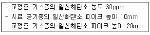
- 15ppm
- 35ppm
- 40ppm
- 60ppm
(정답률: 알수없음)
70. 다음은 굴뚝배출가스중 아황산가스를 연속적으로 자동 측정하는 방법에 관한 설명이다. 이 중 틀린 것은?
- 80% 교정가스를 스팬가스라고 한다.
- 교정가스는 연속 자동측정기 최대 눈금치의 약 50%와 90%에 해당하는 농도를 갖는다.
- 제로가스는 아황산가스 농도가 1ppm미만인 것으로 보증된 표준가스를 말한다.
- 편향이란 계통오차, 측정결과에 치우침을 주는 원인에 의해 생기는 오차를 말한다.
(정답률: 55%)
71. 가스크로마토그래프의 정량 분석방법과 가장 거리가 먼 것은?
- 넓이 백분율법
- 내부표준법
- 내부첨가법
- 절대검량선법
(정답률: 알수없음)
72. 다음중 원자흡광 광도법에서 분석오차를 유발하는 요인과 가장 거리가 먼 것은?
- 가연성가스 및 조연성가스의 유량이나 압력의 변동
- 검량선 작성의 잘못
- 광원부와 파장선택부의 광학계의 조정 불량
- 측광부의 과열로 인한 램프의 열화
(정답률: 알수없음)
73. 굴뚝등에서 배출되는 가스중 염소분석을 위한 시료채취에 관한 설명으로 틀린 것은?(단, 오르토 톨리딘법기준)
- 시료채취위치는 가스유속이 심하게 변동하지 않고 먼지 등이 쌓이지 않는 곳을 선택한다.
- 시료채취관은 유리관, 석영관, 염화비닐관 및 불소 수지관을 사용한다.
- 가스중의 먼지가 혼입되는 것을 막기 위해 시료채취관의 적당한 곳에 여과재를 끼운다.
- 시료채취관은 굴뚝에 수평하게 하며 끝부분이 굴뚝에 접촉되지 않도록 한다.
(정답률: 알수없음)
74. 다음은 연소 및 화학반응등에 따라 굴뚝 등으로 배출되는 배출가스중의 염화수소를 분석하는 방법중 이온전극법에 관하여 기술한 내용이다 ( )안에 알맞는 내용은?
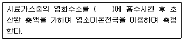
- 수산화나트륨용액
- 질산칼륨용액
- 초산나트륨용액
- 과산화수소수
(정답률: 알수없음)
75. 다음 사항 중 일반적으로 사용하는 이온크로마토그래피의 구성요소 중 분리관에 대한 설명이 잘못 된 것은?
- 이온교환체의 구조면에서는 표층피복형, 표층박막형, 전다공성미립자형이 있다.
- 양이온 교환체는 표면에 슬폰산기를 보유한다.
- 분리관의 재질은 용리액 및 시료액과 반응성이 큰 것을 선택한다.
- 분리관은 에폭시수지관 또는 유리관이 사용된다.
(정답률: 알수없음)
76. 환경대기중의 탄화수소를 자동연속 측정할 때 주시험방법은?
- 총탄화수소 측정법
- 비메탄 탄화수소 측정법
- 활성 탄화수소 측정법
- 비활성 탄화수소 측정법
(정답률: 알수없음)
77. 환경대기중 휘발성유기화합물의 시험방법에 사용되는 용어의 정의로 틀린 것은?
- 머무름부피: 흡착관으로부터 분석물질을 탈착하기 위하여 필요한 운반가스의 부피를 측정함으로써 결정됨
- 안전부피 : 분석대상물질의 손실없이 안전하게 채취할 수 있는 일정농도에 대한 공기의 부피를 말한다
- 열탈착 : 열과 불활성가스를 이용하여 흡착제로부터 휘발성유기화합물을 탈착시켜 기체크로마토그래피로 전달하는 과정
- 2단열탈착 : 흡착제로 부터 분석물질을 열탈착하여 고온농축관에 농축한 후 기체크로마토그래피로 전달하는 과정
(정답률: 알수없음)
78. 피리딘피라졸론법에 의한 시안화수소 정량시 흡수액은? (단, 굴뚝등에서 배출되는 배출가스중 시안화수소분석)
- 과산화수소용액
- 수산화나트륨용액
- 붕산용액
- 질산암모늄용액
(정답률: 알수없음)
79. 굴뚝배출가스 연속자동측정기기가 아닌 휴대용 측정기기를 사용하여 현장에서 질소산화물농도를 측정하는 기준으로 가장 적절한 것은?
- 5분간격으로 3회이상 측정한 결과의 평균값
- 10분간격으로 3회이상 측정한 결과의 평균값
- 5분간격으로 3회이상 측정한 결과의 최대값
- 10분간격으로 3회이상 측정한 결과의 최대값
(정답률: 알수없음)
80. 이온크로마토그래피법에 관한 설명으로 틀린 것은?
- 일반적으로 용리액조, 송액펌프, 시료주입장치, 분리관, 써프렛서, 검출기 및 기록계로 구성되어 있다.
- 검출기는 분리관 용리액 중의 시료성분의 유무와 량을 검출하는 부분으로 일반적으로 전도도검출기를 많이 사용한다.
- 실온 10~25℃,상대습도 30~85% 범위로 급격한 온도 변화가 없어야 한다.
- 공급전원은 전압변동 5% 이하,주파수변동 10% 이하로 변동이 적어야 한다.
(정답률: 알수없음)
5과목: 대기환경관계법규
81. 석탄사용시설의 설치기준을 기술한 내용이다 ( )안에 알맞는 것은?
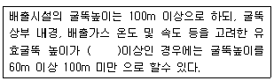
- 550m
- 440m
- 330m
- 220m
(정답률: 알수없음)
82. 부과금 징수유예 사유로 알맞지 않는 것은?
- 천재지변 기타 재해를 입어 사업자의 재산에 심한 손실이 있는 경우
- 사업에 현저한 손실을 입어 중대한 위기에 처한 경우
- 초과부과금이 1천만원을 초과하는 경우
- 기본부과금이 1천만원을 초과하는 경우
(정답률: 30%)
83. 다음중 고체연료환산계수가 가장 큰 연료 또는 연료명은? (단, 무연탄(kg 기준) : 1.00, 단위:kg )
- 목탄
- 갈탄
- 이탄
- 유연탄
(정답률: 알수없음)
84. 배출시설 및 방지시설 운영시 부식, 마모로 인하여 오염물질이 누출되는 배출시설이나 방지시설을 정당한 사유 없이 방치하는 행위를 한 자에 대한 행정처분으로 적절한 것은?
- 100만원 이하의 과태료
- 200만원 이하의 벌금
- 1년 이하의 징역 또는 500만원 이하의 벌금
- 3년 이하의 징역 또는 1500만원 이하의 벌금
(정답률: 알수없음)
85. 정밀검사업무를 대행하는 지정사업자가 고의 또는 중대한 과실로 검사업무를 부실하게 한 경우 업무정지(2차)를 갈음하여 부과하는 과잉금액(만원단위)은?
- 500
- 1000
- 1500
- 2000
(정답률: 알수없음)
86. 배출시설 및 방지시설 운영일지의 보존기간으로 알맞는 것은?
- 최종기재를 한 날 부터 3개월간 보전하여야 한다.
- 최종기재를 한 날 부터 6개월간 보전하여야 한다.
- 최종기재를 한 날 부터 1년간 보전하여야 한다.
- 최종기재를 한 날 부터 2년간 보전하여야 한다.
(정답률: 알수없음)
87. 배출허용기준(악취)측정방법 중 기기분석법에 규정된 악취물질이 아닌 것은?
- 황화수소
- 황화메틸
- 이황화메틸
- 디에틸아민
(정답률: 알수없음)
88. 대기환경기준 항목이 아닌 것은?
- 납
- 일산화탄소
- 오존
- 탄화수소
(정답률: 알수없음)
89. 대기환경보전법상 기후, 생태계변화 유발물질이 아닌것은?
- 일산화탄소
- 과불화탄소
- 수소불화탄소
- 아산화질소
(정답률: 40%)
90. 다음 중 대기환경보전법령상 환경부장관이 설치하는 대기 오염측정망에 해당되지 않는 것은?
- 유해대기물질측정망
- 광화학오염물질측정망
- 지구대기측정망
- 대기중금속측정망
(정답률: 42%)
91. 대기환경보전법에서 사용하는 용어의 정의로 알맞지 않은 것은?
- 가스 : 물질의 연소,합성,분해시에 발생하거나 물리적 성질에 의하여 발생하는 기체상물질
- 기후,생태계변화 유발물질 : 기후온난화등으로 생태계의 변화를 가져올 수 있는 기체상물질로 환경부령이 정하는 것
- 휘발성유기화합물 : 석유화학제품, 유기용제등의 탄화수소류의 물질로 환경부령으로 정하는 것
- 대기오염물질 : 대기오염의 원인이 되는 가스,입자상 물질 또는 악취물질로 환경부령으로 정하는 것
(정답률: 알수없음)
92. 대기오염 경보단계 중 '경보'가 발령되었을 때 조치사항과 가장 거리가 먼 것은?
- 주민의 실외활동 제한 요청
- 자동차의 사용제한 명령
- 사업장의 연료사용량 감축 권고
- 사업장의 조업시간 단축 명령
(정답률: 알수없음)
93. 초과부과금 산정시 다음의 특정유해물질중 1킬로그램당 부과금액이 가장 적은 것은?
- 염소
- 염화수소
- 불소화합물
- 시안화수소
(정답률: 알수없음)
94. 자동차 종류에 따른 규모에 관한 설명으로 알맞지 않은 것은?(단, 2002년 7월 1일 이후 기준)
- 경자동차: 엔진배기량 800cc미만
- 건설기계: 원동기 정격출력 19KW이상 560KW미만
- 중량자동차: 차량총중량 3.5톤 이상
- 이륜자동차: 공차중량 0.5톤 미만
(정답률: 알수없음)
95. 특정대기유해물질이 아닌 것은?
- 1-3 부타디엔
- 스틸렌
- 프로필렌 옥사이드
- 아세트알데히드
(정답률: 알수없음)
96. ( )안에 알맞는 내용은?
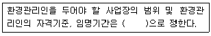
- 시,도지사령
- 총리령
- 환경부령
- 대통령령
(정답률: 25%)
97. '아황산가스'의 대기환경기준(연간 평균치)으로 적절한 것은?
- 0.⑤ppm 이하
- 0.03ppm 이하
- 0.02ppm 이하
- 0.01ppm 이하
(정답률: 43%)
98. 개선하여야 할 사항이 배출시설 및 방지시설의 운전미숙 등으로 인한 경우 개선계획서에 포함되어야 할 사항이 아닌 것은?
- 오염물질 발생량
- 방지시설의 처리능력
- 배출 및 방지시설 운전개선 방법
- 배출허용기준 초과사유 및 대책
(정답률: 알수없음)
99. ( )안에 알맞는 내용은?
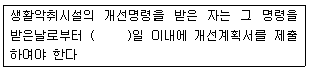
- 7
- 10
- 15
- 30
(정답률: 알수없음)
100. 비산먼지 발생사업신고를 하지 아니한 자에 대한 행정 조치 사항으로 알맞은 것은?
- 100만원 이하의 과태료
- 100만원 이하의 벌금
- 50만원 이하의 과태료
- 50만원 이하의 벌금
(정답률: 알수없음)